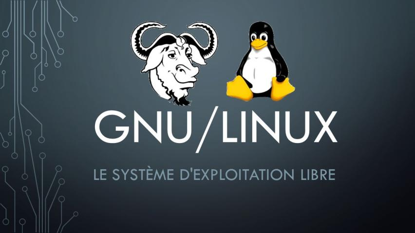
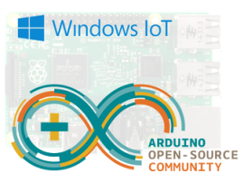

Conception
Le Raspberry PI utilise plusieurs environnements. Il peut utiliser Linux, RISC OS et Windowns IOT. En ce qui concerne les systèmes d'exploitation, il fonctionne avec le système d'exploitation de GNU/Linux mais aussi avec celui de Microsoft Windows ainsi que celui de Google Android Pi. Dans les premiers modèles, le Raspberry PI utilisait une carte SD pour le stockage mais au cours du temps, les développeurs et les fabriquants ont remplacés les cartes SD par des cartes microSD. Concernant la mémoire des Raspberry PI, elle n'a cessé de progresser au fur et mesure passant de 256 Mo au début à 8 Go pour les modèles les plus ressent Le Raspberry PI possède 2 port USB 2.0, 1 port Ethernet 10/100, 1 prise Jack RCA, 1 connecteur CSI pour caméra, 1 connecteur HDMI, 1 connecteur Micro USB pour son alimentation et 1 emplacement pour une carte Micro SD
 